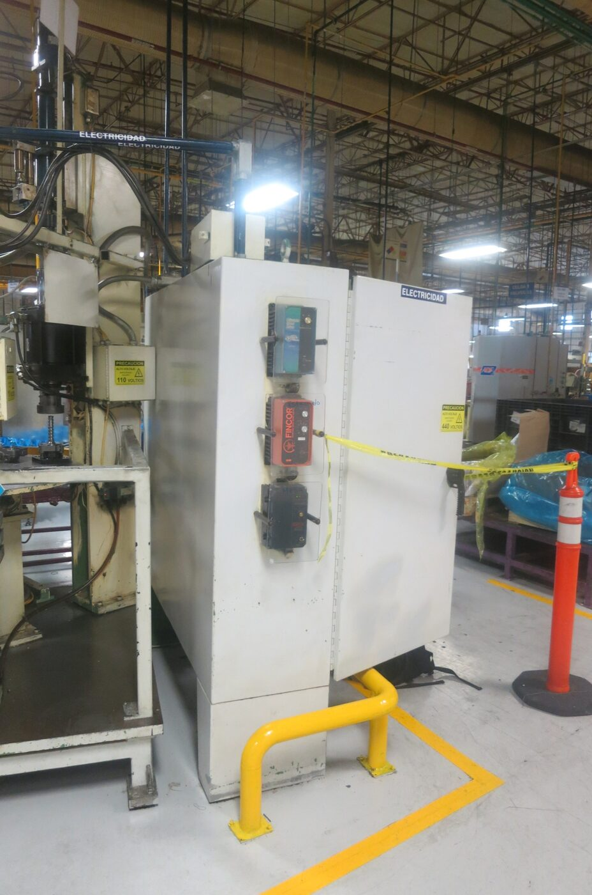
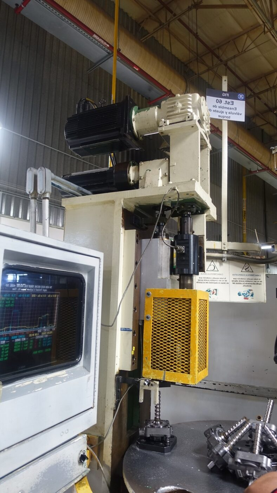

A pinion-and-yoke assembly and torque-calibration machine for hydraulic steering gears was capped at 15–25 pieces/hour on an obsolete PLC 5/30 platform with DC drives. Migrating the control and motion system to ControlLogix/Kinetix — and redesigning the torque-nut and lock-nut mechanical subsystems — pushed output to 35–40 pieces/hour.
The ControlLogix processor communicates over EtherNet/IP to a PanelView Plus 1500 HMI and to Kinetix 6500 drives powering custom-coupled MPL servomotors, with load-cell torque measurement closing the loop on the assembly process.

